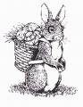
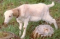
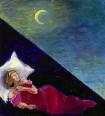

Insta-Fam
Tiana and Hyrum have more than doubled their family's population - the easy way. The Johnson clan has temporarily expanded to include four neices and nephews from Hyrum's side while their mother takes a break. Including her own child and the nephew she tends during the day, Tiana is currently looking after a total of six children under the age of nine! Luckily the Johnsons had recently purchased a spacious four-bedroom fixer-upper with a large yard to accommodate the extra kids. They'd moved in before the kids arrived, but their remodeling projects had only just begun, so their new home is currently torn apart awaiting redecoration and the installation of a new kitchen. Under the circumstances the Johnson's are coping amazingly well, though it's rumored that they've sworn to cap their own childbearing at two.
Bad Easter Eggs

Easter came early this year and all throughout the Cluff community happy people gathered together with their families to enjoy great conversation, delicious feasts and fun Easter egg hunts (except for Daisha, who spent the day in labor). Things were going along great at the Cluff homestead until someone foolishly suggested eating a few of the Easter eggs! Regular readers will know exactly why this was such a bad idea (see last issue's "Chicken Report") Once the deed was done, the whole day was ruined.
Secret Song
Diana's rise to stardom as a country-western songwriter (she's written lyrics about a good, clean-livin' trucker) still remains to be seen. When a reporter from TuffCluff Times asked Diana to reveal a few lines as a taster for anxious fans, Diana declined on the grounds that someone might steal her ideas. Instead, she suggested that we watch the Country Chart Hit-List and prepare to be amazed.
Cluff Fest
The town of Coquille has just had a massive celebration - one presumes in honor of the fact that so many Cluffs have recently moved into the area. Dane and his family held a big cook-out at their house. There was also a classic car show, a parade, music, booths and a fun run. Jasmine, Dane's daughter, placed third in the race. A good time was had by all.
FlySwat 'Em All
"The Siskiyou Pass on I-5 closed the other day because of a bomb threat," reports Diana. "We had trucks everywhere in Ashland and lined up all along the freeway, but it all turned out ok. I think it was kids playing pranks on everyone because the same thing happened at the high school a few weeks ago. Those kids need the fly swatter!" For those who don't know about the fly swatter, it's Diana's weapon of choice when she needs to threaten her boys into doing their chores or getting ready for church. Her reasons for resorting to the swatter are twofold; 1) her less-than-robust manual spankings were being scoffed at and 2) to protect her hand from injury whilst doling out the punishments.
Near Death Experience
Daisha had a brush with death whilst giving birth to her new baby, Tabitha. Her labor was fairly quick and straightforward but shortly after her daughter arrived Daisha began to hemorrhage and had to be rushed into surgery. She lost 16 units of blood and was given a full transfusion but the doctors were unable to stop the bleeding and were forced to perform an emergency hysterectomy to save her life. Daisha was only given a 50/50 chance of surviving, but she pulled through (with a little help from the prayers of friends and family) and after a couple of days in the ICU and just a week in the hospital Daisha began her remarkable recovery. Through it all Dakota was brave and Edward was a saint. Now things are fine, Daisha is up and around and they are all one big happy family again.
Misc. Ball
Dakota is the tallest kid in his class and loves to shoot hoops. Playing basketball was the next logical step, except that in Enlgand basketball doesn't exist. The closest thing is a sport called netball. Though netball is technically co-ed, it's often considered a girlish sport. But, despite being only one other boy on the school team, Dakota jumped at the chance to join. He was put in the "shooters" position and did very well until it came to their first tournament when he suddenly quit. His parents figured that he felt bad for being too rough and knocking down girls on court, but it turned out that netball didn't have ENOUGH contact for Dakota since the real reason he joined up in the first place was to get closer to a girl he "fancied"!
Ski Boys
“Our oldest grandchild, Ammon, is the first to visit us on his own,” says Diana. “He came with his friend Kevin to go skiing on Mt Ashland. The twins wanted to go too so I gave them enough money for one ticket and told them to take turns. But that didn't work so I had to pay out. Nial got up too late to go, even though I had been telling him to get up and do his work for three hours.”
Second Anniversary
It's Tuffcluff.com's second anniversary in April. Why not celebrate by sending in your stories and photos so we can make the site a cooler place to visit in the years to come.
Cool Things To Try
This month the Cluff Family recommends checking out:
Google Earth-But only if your computer is fast enough
Sunset Beach-Located on the Oregon Coast
Tikka Masala-Indian food invented in England
Next Issue
Don't miss the Summer edition of The Cluff Family Times. Coming to a computer near you in ... oh, let's face it, it's gonna be late, but it'll be worth it!
Got a problem? The Cluff Family Times' lifestyle guru can solve all your personal, romantic, financial, spiritual, decorating and fashion dilemmas. The answers are only a click away.
|
|
Baby Girl for Daisha & Edward
Congratulations to Daisha and Edward who had a beautiful baby girl on March 28th. Tabitha Mary was 8lb 3 oz and 21 inches long. She has fair hair, blue eyes and porcelain skin - a perfect little English rose. Though Daisha's three-hour labor was quick, it wasn't easy (see Accident and Injury Report). But both mother and baby are recovering fine now. Daisha is very happy with her new arrival, "I was ecstatic and even cried when I found out that she was a girl," says the hormonal mother of two. "Now the boys don't outnumber me anymore so when we vote for which DVD to rent I won't keep getting stuck with lame-o war documentaries or action movies!" Though Tabitha has caused Edward and Dakota to lose some ground, both are very pleased with her and have proven to be excellent helpers.
Shira & Jeremy Have Baby Girl
Congratulations to Shira and Jeremy who had an adorable baby girl on May 5th (05/05/05!). Sophia Jane was 7lb 12 oz and 20 inches long with big, beautiful eyes and long black hair. Shira's labor was long, hard and painful but both she and Jeremy were very happy with end result. Shira is enjoying her new role, "I am hanging out, doing the housewife/mother thing, and I really enjoy it," says the first time mother. "Definitely hard work, but really relaxing too, I don't really have to do much." Shira’s mother went to visit the trio soon after the event and found Jeremy embracing his domestic side. “He had everything under control,” says impressed mother-in-law, Diana. “He does all of the housework, washing, cooking, cleaning and errands. The house is spotless. They live in simple beauty with lots of white everywhere and decorations that look like an art show.” (Tuffcluff gives the empty artsy-white-room look three weeks – max!) “I am happy that all five of my daughters have had a baby in the last year and a half,” continues Diana. “Sophia is extra beautiful and Shira looks great and is moving around like she never had a baby. Some of us girls look like we’ve been through a war after having a baby!”
Centerpiece Extravaganza
I use centerpieces to make meals that have more atmosphere," says housewife extraordinaire, Diana Cluff. "We don't just eat with our mouths, we also use our eyes, ears and noses, so when my family comes in for dinner they are greeted with a colorful centerpiece with candles, the sound of themed music and the smell the food. I also wear outfits to match the food, for instance; a peasant blouse and skirt for Mexican, a mumu for Hawaiian and a long silk housecoat with chop sticks in my hair for Oriental. It works every time. The family enjoys the food in a fun way and look forward to coming to dinner. Some of my table decorations are souvenirs but many come from thrift shops or the children's toy-box. I store each centerpiece in a plastic box with its matching music and candles for the table. Some examples of my centerpieces are:
Hobo: I put Burl Ives on the stereo and a toy train and candles on the table. I wear old jeans or work clothes with boots, mess my hair up and put soot smudges on my face (it’s the perfect meal to have after doing yard work all day). We eat soup or beans and bread out of tin cans and tin pie plates. We also roast tiny sausages on toothpicks over the candles. At each place setting I tie a red hobo handkerchief to a stick and pack it with mini marshmallows to roast over the candles for dessert.
Valentines Day: I put romantic music on and scatter love notes, candy and hearts all over the table. We eat fancy food and I wear a long red evening gown, a fancy hairdo and lots of jewelry, makeup and perfume. After dinner we watch old romantic movies or dance and kiss.
Thanksgiving: I decorate the table with Indians, pilgrims, turkeys, ducks, dried flowers and nuts. We eat traditional Thanksgiving food then watch The Emigrant Saga (a [horrific] movie about our ancestors coming over from Europe). I like to dress up in autumn colors, in my Sunday best or even like a pilgrim or Indian.
Christmas: This centerpiece is huge with Christmas lights, villages and red and green foliage all over the table. We have ham for dinner and I wear a formal red or green dress. We also play Christmas music and watch Holiday movies.
St Patrick's Day: I put a pot of pennies, little people and clovers all over the table. I play Irish music and we eat corned beef, cabbage, potatoes and green Jell-O.
African: I decorate the table with toy animals and candles. I wear a bright colored mumu and play African music. We eat fish on a bed of spiced rice with whole root vegetables. If you’re really adventurous you can spread your tablecloth on the floor and eat while kneeling down.
Oriental: When we get Chinese takeout, I fix the table up with candlelight, Oriental dolls, place mats, chopsticks and vases. We play music from the Far East and I wear a silk robe with chop sticks or a flower in my hair.
American Indian: For the centerpiece I use Indian dolls, cacti, teepees, bow ‘n’ arrows, rocks, drums and moccasins. I like to say a few Indian words like ‘how’ and ‘ya ta hay’ now and then. It's also fun to do an Indian dance in a circle around the fire or in the house. We eat scones, meat cooked in a frying pan and strawberry soda pop. I put out head bands and feathers for all.
Cowboy: I put horseshoes, toy guns in holsters, small animal skulls, children's cowboy boots filled with flowers, red bandana handkerchiefs, spurs and red candles at each plate. The dress is Western with boots and a hat. The music is Johnny Cash or country music. The food is BBQ with pinto beans, potatoes, corn bread or hot bread. Root beer floats are best for dessert.
Pioneer Day: Covered wagons, canning jars and old antiques make up the centerpiece for this theme. For supper some things we eat are bread and milk (with homemade bread), green onions, radishes, cottage cheese, scones, corn on the cob, watermelon, garden vegetables, meat and bread pudding. I wear a pioneer hat, a long skirt, an apron and use music that you can square dance to. We play tug of war and do arm and leg wrestling to music with a fast beat (like Hooked on Classics). We also like cooking hot dogs and corn over the campfire by the creek in our yard. Taffy pulls and watermelon busts are often done by the creek as well.
Other: Italian, Southern food, Hawaiian, Anniversaries, New Years Day. Just be creative!
Chicken Man
"Dad loves sitting out in the chicken coop," says Diana. "He lets the chickens out to play while he sits on a chair in the coop for a while. I guess this is his way to relax, he is a farmer at heart."
The Chicken Are Revolting
 "The chickens were left for dead for three days while we were on vacation in San Francisco," says animal hater, Diana, with a sinister laugh. "I guess their food ran out and now they're molting and looking worse for the wear!" But Diana's cruel laughter is not going unnoticed. The coop is rife with rumors of a chicken coup d'état. Chicken ringleader, General Rooster Eggbert McCluckington IV, is keeping tight-lipped about his plans, but does admit that the chickens are restless and that he does NOT, in fact, have lips. Sources close to the coop say that there is something fowl in the air. Our secret inside-agent agrees and even goes a step further by revealing that the chickens are plotting their revenge in a covert operation tentatively entitled 'The Molt Revolt'. Keep checking back for updates on the great coop coup of 2005.
"The chickens were left for dead for three days while we were on vacation in San Francisco," says animal hater, Diana, with a sinister laugh. "I guess their food ran out and now they're molting and looking worse for the wear!" But Diana's cruel laughter is not going unnoticed. The coop is rife with rumors of a chicken coup d'état. Chicken ringleader, General Rooster Eggbert McCluckington IV, is keeping tight-lipped about his plans, but does admit that the chickens are restless and that he does NOT, in fact, have lips. Sources close to the coop say that there is something fowl in the air. Our secret inside-agent agrees and even goes a step further by revealing that the chickens are plotting their revenge in a covert operation tentatively entitled 'The Molt Revolt'. Keep checking back for updates on the great coop coup of 2005.
Smitten With Pestilence
"When the sun sets at our house," says Diana, "usually everyone turns into a monkey as they scratch and fight off the attacking mosquitoes. But this year started out mosquito-free because Dad put vegetable oil on the pond to stop them from breeding. But after a couple of months the oil disappeared and now we are back to having mosquitoes attacking us all again. Oh well, win some lose some!"
Homemade Dinner
 Dennis Cluff, master gardener, is obsessed with homegrown produce. He spends countless hours each year tending the family vegetable plot and planning how to do it better next year. "We still have the potatoes, corn and tomatoes to plant," reports Dennis. "Dallas cleaned out both of the garden boxes,
nearly all by himself. Saturday we planted brussel sprouts, green cabbage, red cabbage, cauliflower, red leaf lettuce, romaine, head lettuce and several types of onion. Nial has plowed up the area between the pathway and the grapes where we will plant corn this year. I have some tomato plants that we will plant just beyond the raspberries in the field. That is where we will plant all the vine things too. We hope to plant the potatoes, corn and tomatoes tomorrow night." Diana enjoys the end result of Dennis' labor, but doesn't like working in the garden herself. However, she loves homemade food so much that she is pushing to get a family goat so that she can have homemade milk, butter and cottage cheese. Dennis' adamant refusal is based on past experience with a variety of useless goats including 'The Pygmies', 'Hansel & Gretel', and the ear-less 'Wiggle-sword' (see above photo).
Produce Ripening
"Our strawberries are ripe now," reports Diana, "and we also have green onions, lettuce and rhubarb (or rubberboob, as Daisha called it as a little girl). We also had an artichoke from the yard last night."
Diana London trip
"After 27 hours I finally made it to England," recounts Diana. "We had storms on the way and had to go out of our way to avoid the bad weather. This made the plane late, so a bunch of us had to try to get our connecting flight in only 15 minutes. We had to run what seemed like a mile in a huge airport. They were calling our names on the loud speakers. We we’re going as fast as we could. I had high heels on and all of my weight was on the balls of my feet so I felt like I was going to fall over, plus my socks were digging holes into the blisters I got from walking in the San Francisco airport. I was in trouble. To add to everything, we had been served drinks on the plane but had to stay buckled in our seats because of turbulence so didn't get to use the bathrooms. I had to stop to use the restroom at the airport, which only made me later. Then I went to the wrong gate and had to keep going for what seemed like another mile. I finally made it just in time. They locked the doors of the plane right after me. On the plane my high-heeled boots made me keep bumping my head on the plane ceiling! But it wasn't all bad, I got to see the northern lights above Greenland. The lights were pale green, like a big fog above the horizon. I loved it. When I finally got to London, my feet had huge blisters but I had to pretend I wasn't hurting as I limped the long hallways, through customs and out to get my luggage. I learned my lesson and will only wear flat shoes and take non-stop flights from now on. I've been to Britain three times now and it's still fun to visit. I love London with its great buildings, double-decker red buses and red telephone booths. The English people are so nice and polite and seem very educated too. When we got to the little village that Edward and Daisha live in, I was glad to see that Daisha was alive and as fun as ever. She was getting the royal treatment from Edward. He did everything! I made bread, but he wouldn't let me do much else. He cooked, cleaned, cared for Dakota, gave Daisha daily presents and behaved with perfect manners toward his bride and mother of their new daughter, Tabitha. We visited a village where Charles Dickens lived and I ran up a bunch of stairs to the top of a castle. My legs were shaking for the rest of the day. This was Daisha's first outing so she couldn't climb stairs. The outing wasn't too long as she needed to be careful. I walked Dakota through the village to and from school everyday, as many parents do. The parents all stand in groups to visit with each other as they watch their children on the playground before the bell rings. Then the children all line up and go into school one class at a time. I toured old churches along the way back from school. I loved to see the graveyards outside the churches, some of the tombstones are so old and weather-beaten that there isn't any writing left on them. England is a great place to visit."
Beach Boys
Dane and his boys recently had a father's and son's campout at beautiful Sunset Beach. The beach is Diana's favorite spot on the Oregon coast. "You can climb up the hills and cliffs by the beach," she raves, "then you can rope down to other beaches beyond the great grassy group camping site. You can also take walking trails with beautiful flowers and go to a place on the cliffs above the ocean that looks like the rain forest. I love everything to do with the beach."
Naked Adventure
 The Cluff boys had been looking forward to Spring Break for months. They were going on a 50 mile hike from Diamond Lake to Roseburg with their Scout Troop. They spent ages gearing up for the big hike, buying new backpacks and filling them with everything they’d need for the trip. But on the first day of their hike they ran into trouble. They were hiking near a hot spring at Diamond Lake when it started raining hard. As they hiked up to the spring, there was a big sign that read, ‘If you are offended by nude people DO NOT ENTER’. They continued on, thinking the rain would prevent anyone from using the hot spring – but it didn’t. “The boys said the girls were wearing suits but the boys weren’t,” says a shocked Diana, “so they moved out quickly. At least, that was the story they told me. Boys don't tell all like girls do. I learn about many things much later. The 'suits' the girls were wearing could have been 'birthday suits' for all I know!” The next morning the boys showed up back home. “The hike was rained out after the first night,” continues Diana, “they only got to hike three miles. So then Nial, who felt gypped, wanted to go camping and fishing in the wilderness all by himself. [no doubt near the Diamond Lake Hot Spring!] I don't trust a lone boy in the wilderness, but after two day of torturing me to let him go we sent all three boys. They planned to go to Rouge River with their hip-waders and fly-fishing poles. They took the cell phone and we haven't heard from them since. The house is clean and quiet, like an old folk’s home.”
The Cluff boys had been looking forward to Spring Break for months. They were going on a 50 mile hike from Diamond Lake to Roseburg with their Scout Troop. They spent ages gearing up for the big hike, buying new backpacks and filling them with everything they’d need for the trip. But on the first day of their hike they ran into trouble. They were hiking near a hot spring at Diamond Lake when it started raining hard. As they hiked up to the spring, there was a big sign that read, ‘If you are offended by nude people DO NOT ENTER’. They continued on, thinking the rain would prevent anyone from using the hot spring – but it didn’t. “The boys said the girls were wearing suits but the boys weren’t,” says a shocked Diana, “so they moved out quickly. At least, that was the story they told me. Boys don't tell all like girls do. I learn about many things much later. The 'suits' the girls were wearing could have been 'birthday suits' for all I know!” The next morning the boys showed up back home. “The hike was rained out after the first night,” continues Diana, “they only got to hike three miles. So then Nial, who felt gypped, wanted to go camping and fishing in the wilderness all by himself. [no doubt near the Diamond Lake Hot Spring!] I don't trust a lone boy in the wilderness, but after two day of torturing me to let him go we sent all three boys. They planned to go to Rouge River with their hip-waders and fly-fishing poles. They took the cell phone and we haven't heard from them since. The house is clean and quiet, like an old folk’s home.”
Dangerous Trip
"On the way to San Francisco for Katie George's wedding we had wild times," reports nervous passenger Diana. "We almost got killed on the freeway over and over. Then I encountered a burglar in the house we were staying at on Lombard Street. I confronted him, but he got away. Oh well, win some lose some."
George Family Reunion
There is an Elmont George Family reunion on the July 23/24th weekend in and around Ashland. There is an exciting schedule of events and activities including BBQs, watersports, an old fashioned taffy pull hosted by Diana (of course!) and plenty of good conversation. Don't miss it!
Sevey Family Reunion
This summer, August 10 - 13 2005, there will be a Sevey reunion in the breathtaking Redwood forest on the California coast. Hiouchi Hamlet has been reserved for our group and is located nine miles inland from Crescent City - just across the road from the Jedediah Smith state park entrance. An RV park is available for those who are interested, otherwise various accommodations can be found in the plentiful motels of Crescent City. The Sevey reunion of 2005 promises to be a great adventure with the crystal clear Jedediah Smith river and the pristine beaches of the beautiful Pacific Northwest only moments from base camp. You don't want to pass this one up.
Distant Cluff Relations Reunion
The David Cluff reunion is June l7 and 18 in Springville, Utah for any who may be interested. David would have been 210 years old. It only costs ten dollars per family and each family will be responsible for their own room and board.
Our Cluff Family Reunion
Just in case you are unaware, the Dennis and Diana Cluff family reunions take place each year in Ashland on and around the Fourth of July. So make a permanent mental note then get yourself to the Homestead for the party!
|
|
Men: A Translation
When Diana went to London for two weeks to care for her daughter, Daisha, who had just given birth, Dennis checked in with her regularly via email. The problem was that each email was disturbingly optimistic considering what was actually going on. Dennis’ emails (in bold) and their translations (in italics) follow:
Dear Diana,
“I miss you.”
Why, oh why, did you leave me with these monsters?!
“We’re all getting along fine.”
We've nearly killed each other several times this morning already!!
“We’re keeping the house as clean as we can.”
Everything is a disaster!!
“We take turns cooking and are eating like real men.”
We’re living on Top Ramen and eating from a trough!!
“Weston fell off his bicycle and scratched his left leg.”
He was rushed to the ER where he was heavily sedated, worked on for two hours and given 17 stitches!!
“Then a boy at school got miffed at him and nudged his injured leg, but he’ll be fine.”
A vicious bully attacked Weston and kicked open several of his stitches!!
Love,
Dennis
Not to be outdone, Diana’s response (and I SWEAR this is word for word) was:
Dear Dennis,
“Was Weston riding the bike that is missing brakes, that he almost got killed on if he hadn't jumped for his life when the car almost hit him the other day on the highway? Please fix the brakes, it is better than getting killed.”
Love,
Diana
Mel's Kids ©
When Melanie went to her local photo shop to get a picture of her kids enlarged, she was refused on suspicion of using a professional photographer's copyrighted photo! She explained that she WAS a photographer and that if they needed further proof, the kids in the picture were right there with her. But they still didn't buy it! In the end she was forced to sign a form that absolved them of all copyright infringement responsibility. Although it was a massive headache, Melanie was thrilled with the mistake, "it made me feel like they really thought I was good!"
Scouters
 Nial got approval for his Eagle project (making a trail through poison oak in the park) and hopes to finish before he turns 18 and is no longer eligible (in eight months). The twins went to Camp Baker on the coast for a week and earned more merit badges. They are now Life Scouts and close to finishing. "Weston and I are going to get our Life Scout at the Court of Honor," reports Dallas. "We should also be Eagle by the end of this year, like Dane." Watch this column to keep up on their progress. Scout pictures.
Nial got approval for his Eagle project (making a trail through poison oak in the park) and hopes to finish before he turns 18 and is no longer eligible (in eight months). The twins went to Camp Baker on the coast for a week and earned more merit badges. They are now Life Scouts and close to finishing. "Weston and I are going to get our Life Scout at the Court of Honor," reports Dallas. "We should also be Eagle by the end of this year, like Dane." Watch this column to keep up on their progress. Scout pictures.
 Here, wedged between 'Lifestyles' and 'Bizarre-o World', Diana imparts some of her experience and wisdom to help with everyday problems. Here, wedged between 'Lifestyles' and 'Bizarre-o World', Diana imparts some of her experience and wisdom to help with everyday problems.
Travel Safety Tip
If you travel to London, here is a tip to save your life: when waiting to cross the street on the corner, stand back from the curb so you don’t get hit by the buses that sometimes run over the curb while turning on the narrow streets. Ann Yvette was hit by a bus, but was able to push off its side in time to save her life. She has a fast reaction time as she always has her hand up to push off horses when they come at her. Also, CARS have the right-of-way when you are crossing the street, except when you are in a crosswalk. You are OK to J walk in England, but the cars won't slow down for you like they do here in the US. Other than that, the people are great and the trip is so fun.
Sleeping Outside - Part III
(Early Spring)
Day 214 For my birthday Tiana and Hyrum gave me just what I wanted, a whole roll of clear plastic. I use it to cover my bed when it rains. I can see the moon when it’s over my head. I love it. My old black plastic used to get so hot in the sun, it seemed like it would catch my sleeping bag on fire.
Day 220 I awoke to five hawks circling above me this morning. I think they think I’m dead meat. Maybe my stinking garlic breath makes them think I am dead, as I chew a whole clove of garlic before bedtime. Anyway, I chased them off by moving the plastic and getting up. I am glad the buzzard didn't show up to start the feast, he has been eyeing me from a nearby tree lately.
Day 239 We had a big wicked thunderstorm with cloudbursts, hail, thunder and lighting. It was great but I got soaked when I went to bed. Glad a tree didn't fall on me.
Day 253 I hear wild things making fighting noises by the creek at night. As it gets closer to summer I hear more and more animal screams from the bushes. It freaks me out a little but I fall right back to sleep. We have a big, fat raccoon that lives under the back porch and eats our cat food. I hope he doesn't come to get me in my sleep. I think I will start wearing my hockey mask again to save my face if the wild things try to bite me in the night.
Day 262 It’s getting warmer now but I like it around 15 to 17 degrees best as the air is so great. But I have to wear a hockey or ski mask to protect my nose from freezing.
Day 267 It's fun to hear the raccoons fight, the opossums hiss and smell the skunks as they pass. The children have been sleeping in tents on the lawn and love to watch me run around in the dark with my big stick to whack the animal fights. The most feared wild thing is the mountain lion. He is killing
dogs three miles away from us. Hopefully it was only our yellow cat people see, when they report seeing a mountain lion on our barn roof!
Day 273 I spotted a coyote running on the Dead Indian. The coyotes have crossed the creek. We hope the rattlesnakes don't cross too.
Sleeping Outside: Part IV
(Late Spring)
HER STORY:
“Well, the end is here,” says an elated Diana. “Dad slept outside with me last night! I asked him if he thought it was fun and he said, ‘it’s hard for me to get into such a tiny mattress on the ground’. The thriller of the night was seeing a huge cloud that looked like a cat face with a star in one eye that winked at us as it passed. That was it and we fell asleep. We awoke to frosty air, honking ducks flying by and a pink sunrise. I asked Dad how he liked his night outside. He didn't respond for a while then finally said, ‘Well, you like burned meat and I don't. It’s like that’. I couldn't believe it, sleeping outside is the most fun I have all day. Oh well, win some, lose some.”
HIS STORY:
“I am acquainted with this pretty woman that has this insane idea that sleeping outside is exhilarating and mentally and physically stimulating,” says a baffled Dennis. “She thinks it's the cats meow! It’s only the wildcat's meow when one wanders across her feet during the night! 20 below, rainstorms, cloudbursts, hail, snow, wind, wild animals, spiders, strange men running through the yard at midnight, screaming owls (that she talks back to), roosters crowing all hours, flooding creek, frost, wet bottoms from wet sleeping bags from leaky covers, wandering around at all hours looking for the outhouse! All this excitement, all by herself night after night. Is that "genuine exhilaration?" POOH BAH!! She starts out with 3 layers of sweats followed by 4 pairs of heavy socks, 2 pairs of mittens, a pair of quilted pajamas with a hood to go over her ski mask then stuffs it all in a 40 below sleeping bag and tops it off with a couple sheets of plastic. As she walks out the door she says, ‘Are you sure you don't want to sleep out tonight?’ Oh, I’m SURE! I pretend not to hear her as I roll over in the warm waterbed, sleeping in next to nothing. (Too much info. Dad!) Last night I thought, ‘What the heck, she's down to 1 pair of sweats, socks and pajamas, so I might venture… But not all decked out as an Eskimo. A pair of socks with my LDS's maybe, but that's all.’ She felt sorry for me and set up the 40 below sleeping bag on my side and went to the attic to fetch a cast-off sleeping bag. One with flower prints on it and probably some other defects, saved just in case one of the grandchildren MIGHT need one someday. I grab my trusty potty bottle so I didn't have to wander around looking for the outhouse during the night and ventured to the deck looking back at the waterbed wondering if I had rocks in my head. We finally weaseled down into our bags then realized we hadn't kissed goodnight yet. With all kinds of contortions we finally managed a wimpy peck and a muffled "good-night". We might just as well been sleeping on opposite sides of the house all scrunched into those sleeping bags. Right away I realized that a pair of socks in a 40 below sleeping bag was a big mistake... too hot, but be danged if I was going to go through all that getting into the sleeping bag - again. Feet were hot but my back was cold. Zipper time. Half and hour later I finally maneuvered the zipper from the inside to stop the wind from careening down my backside and fell asleep. The boys were all at Camporee for the Scouts and not due in until about 1 a.m. so about that time I crawled out and started wandering around looking for the outhouse (I forgot the potty bottle) and found that the boys were back and when I tried to scrunch back into the bedroll, Mom came jumping out of her dream and thought she was being wild-catted again. I got her calmed down and settled in to get some rest, happy knowing that it was Stake Conference in the morning and I didn't have to get up at 5:30 to prepare my lesson like usual. When I did get up at 6:15, Mom was already off on her walk to the airport and back and the washer and dryer were humming away. All that fresh air just didn't fire me up like it does her and you know what, "sleeping out" is still lame! Waterbed, mmmmmmmmm!
Joke-A-Rama
Q. Why is 6 afraid of 7?
A. Because 7 ate 9
If you pull the wings off of a fly, does it become a walk?
|